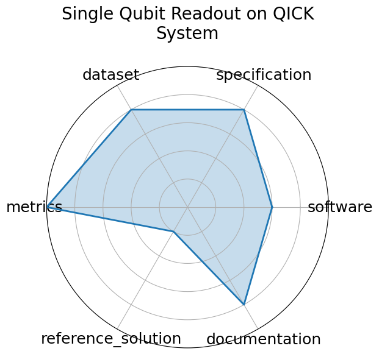

Single Qubit Readout on QICK System
Edit: edit this entry
Date: 2025-01-24
Name: Single Qubit Readout on QICK System
Domain: Quantum Computing
Focus: Real-time single-qubit state classification using FPGA firmware
Keywords: qubit readout, hls4ml, FPGA, QICK
Task Types: Classification
Metrics: Accuracy, Latency
Models: hls4ml quantized NN
Citation:
-
Giuseppe Di Guglielmo, Botao Du, Javier Campos, Alexandra Boltasseva, Akash V. Dixit, Farah Fahim, Zhaxylyk Kudyshev, Santiago Lopez, Ruichao Ma, Gabriel N. Perdue, Nhan Tran, Omer Yesilyurt, and Daniel Bowring. End-to-end workflow for machine learning-based qubit readout with qick and hls4ml. 2025. URL: https://arxiv.org/abs/2501.14663, arXiv:2501.14663.
-
bibtex: ``` @misc{diguglielmo2025endtoendworkflowmachinelearningbased,
archiveprefix = {arXiv}, author = {Giuseppe Di Guglielmo and Botao Du and Javier Campos and Alexandra Boltasseva and Akash V. Dixit and Farah Fahim and Zhaxylyk Kudyshev and Santiago Lopez and Ruichao Ma and Gabriel N. Perdue and Nhan Tran and Omer Yesilyurt and Daniel Bowring}, eprint = {2501.14663}, primaryclass = {quant-ph}, title = {End-to-end workflow for machine learning-based qubit readout with QICK and hls4ml}, url = {https://arxiv.org/abs/2501.14663}, year = {2025}}
```
Ratings:
Software:
-
Rating: 3
-
Reason: Code and FPGA firmware available on GitHub; integration with hls4ml demonstrated. Some deployment details and examples are provided but overall software maturity is moderate.
Specification:
-
Rating: 4
-
Reason: Task clearly defined: real-time single-qubit state classification with latency and fidelity constraints. Labeling and ground truth definitions could be more explicit.
Dataset:
-
Rating: 4
-
Reason: Dataset hosted on Zenodo with structured data; however, detailed documentation on image acquisition and labeling pipeline is limited.
Metrics:
-
Rating: 5
-
Reason: Standard classification metrics accuracy, latency are used and directly relevant to the quantum readout task.
Reference Solution:
-
Rating: 1
-
Reason: No baseline or starter models with runnable code are linked publicly.
Documentation:
-
Rating: 4
-
Reason: Codabench task page and GitHub repo provide descriptions and usage instructions, but detailed API or deployment tutorials are limited.
Average Rating: 3.5
Radar Plot: 